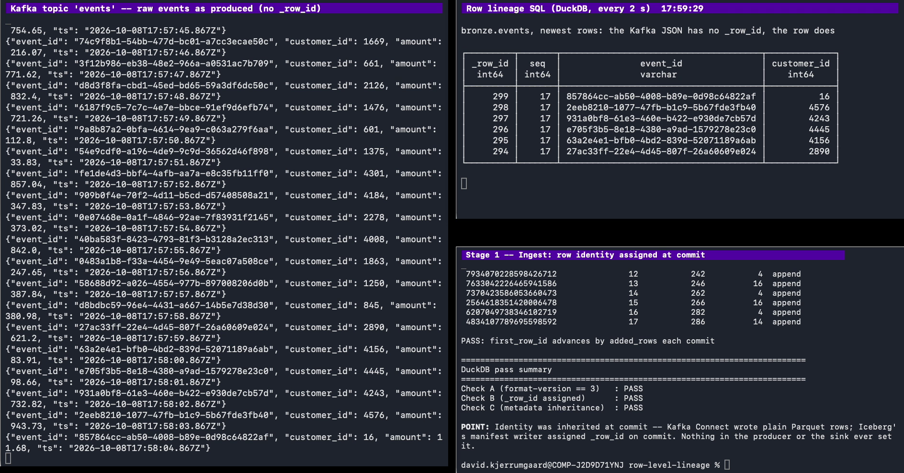
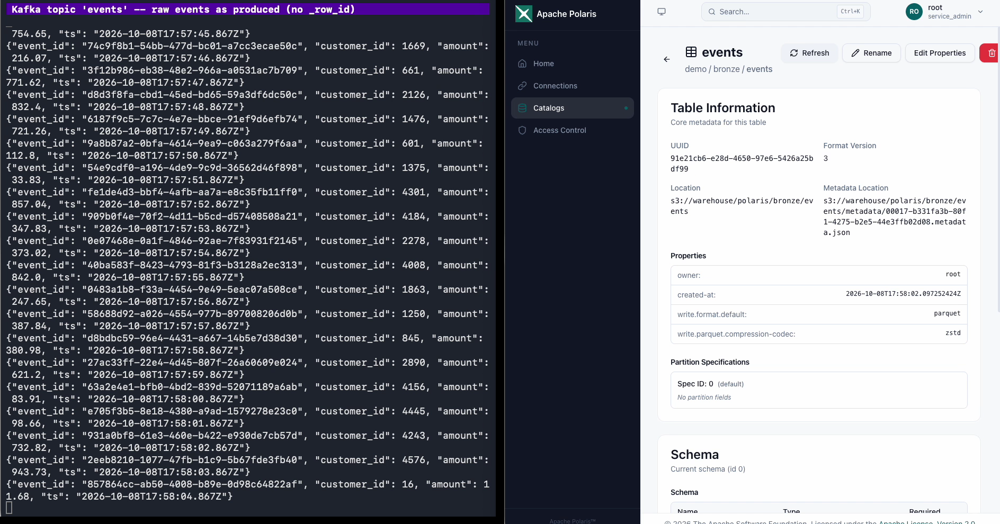
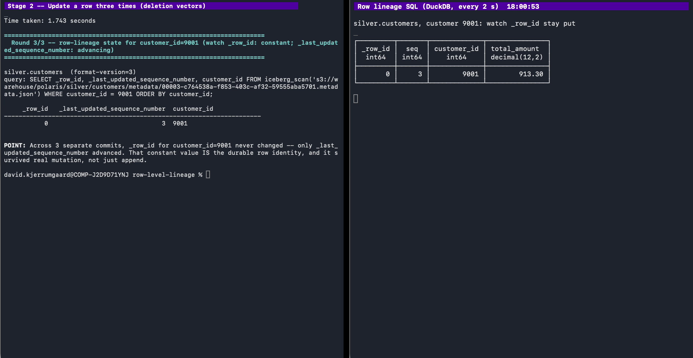
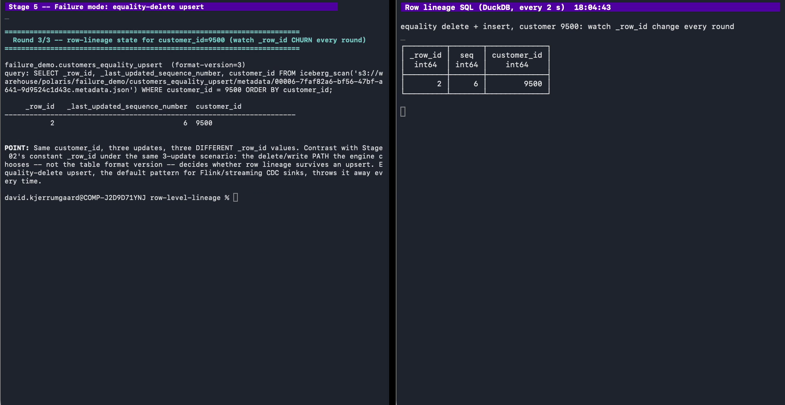

Row-level lineage and schema evolution for streaming data
Lineage Today Stops at the Table
job
table
job
table
?
Which commit produced this row?
2
A Stream Breaks Three Batch Assumptions
Lakehouse-native streaming: the stream lands as Iceberg commits through the catalog, continuously — no batch ETL hop in between.
A commit every 2 seconds
Upserts against rows that already exist
Producers add fields without telling anyone
3
Three Ways to Get No Row Lineage at All
1
Upgrade V2 → V3: _row_id is NULL
2
Kafka Connect auto-create makes V2 tables — create V3 explicitly
3
Flink's Iceberg source can't project _row_id
4
The Writer Never Sets It
Row identity in Iceberg V3
5
Identity Is Inherited at Commit
Kafka event
no _row_id
Kafka Connect
plain Parquet
commit
snapshot
first-row-id
table
next-row-id
Last 6 of 17 commits, 300 events
commit
12
13
14
15
16
17
table
first-row-id
242
246
262
266
282
286
next-row-id
added-rows
4
16
4
16
4
14
300
_row_id=first-row-id+ position
6
The Message Has No ID. The Row Does.
7
One Catalog, Every Engine


first_row_id continues commit to commit
Format Version 3
8
Update It Three Times. Same ID.
9
A New Field Mid-Stream. Nothing Stops.
10
Same Three Updates, Different Writer
Stage 2
Deletion vector
position-delete MERGE, customer 9001
_row_id
0, 0, 0

Stage 5
Equality delete
equality delete + insert, customer 9500
_row_id
0, 1, 2
at sequence numbers 2 / 4 / 6

Both tables are V3 created from scratch.
_row_id 0 after 3 updates, sequence 3
_row_id 2 after 3 updates, sequence 6
11
Defaults Are Only as Good as the Writer
On slide 10 the sink added channel as an optional column with no default, so the 402 earlier rows read NULL. V3 defaults could fill them, but Iceberg 1.11's Kafka Connect sink ignores write-defaults.
channel NOT NULL + default
sink task FAILED
the sink's task dies on the first record without the field, until restarted by hand
java.lang.NullPointerException: Cannot invoke "java.lang.CharSequence.toString()" because "value" is null
channel optional + default
NULL
the sink keeps ingesting, writes NULL
V3 has two defaults: initial-default is what existing rows read; write-default is what new rows get, if the writer applies it. Spark's INSERT ... DEFAULT applies it; the sink doesn't.
12
What We'd Tell Ourselves on Day One
Create V3 from scratch
Deletion vectors keep identity
Read lineage with Spark or DuckDB
Let the sink evolve the schema; keep new columns optional
13
Plumbing That Bit Us
1
In-memory SQLite REST catalog: 24 parallel GETs → HTTP 500 no such table: iceberg_tables; file-backed store fixed it
2
JavaScript rounds 19-digit snapshot ids; format them server-side
3
Catalogs differ in the plumbing: Lakekeeper (our backup catalog) deletes a dropped table's files itself, so Spark's DROP TABLE ... PURGE races it
4
Kafka Connect's Iceberg sink has no native OpenLineage support; one catalog property adds it (next phase)
14
Bring Your Own Lineage
Composable Lineage, joined on one key
15
Two Models, One Key: sequenceNumber
Kafka Connect
Spark
Apache Polaris
catalog
metrics-reporter-impl
OpenLineageMetricsReporter
collector
Marquez
graph
Iceberg table rows
_last_updated_sequence_number
sequenceNumber = _last_updated_sequence_number
16
One Extension Point, One Property
public class OpenLineageMetricsReporter implementsMetricsReporter {
@Overridepublic void report(MetricsReport report) {
if (!(report instanceofCommitReport)) {
return;
}
CommitReport commit = (CommitReport) report;
// POST an OpenLineage RunEvent: tableName, snapshotId,// sequenceNumber, operation -> your lineage backend
3Upsert through deletion-vector MERGE, not equality deletes
4Set metrics-reporter-impl on the catalog, emit sequenceNumber to your lineage backend
5Join WHERE _last_updated_sequence_number = event.sequenceNumber
6Schema drift: iceberg.tables.evolve-schema-enabled=true lets the sink add new fields as optional columns, metadata-only; VARIANT for fields nobody modeled; defaults only where every writer applies them
7Pick a V3-capable REST catalog and test it (Apache Polaris and Lakekeeper passed; Nessie doesn't support V3)